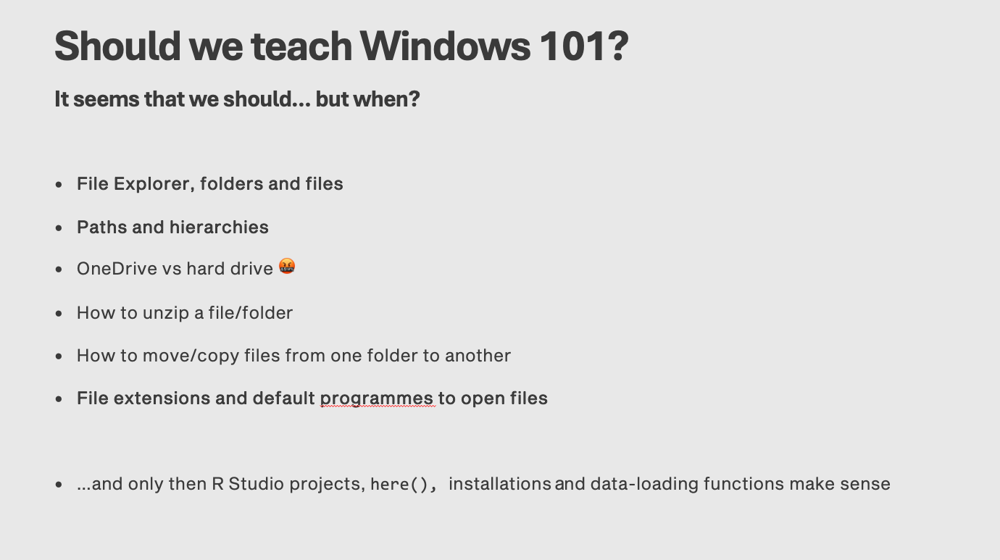

5 How to use a computer
In my experience, one of the biggest barriers to learning programming for students today is not the complexity of coding itself, but rather the lack of fundamental computer skills. This chapter covers the most common issues that I encounter.
5.0.1 How to use a computer
Notably (and importantly for me as a tutor and module leader of the module where we teach R), this book contains a chapter on how to use a computer. In my experience in teaching R to undergraduates, many students struggle with operating a computer, which makes learning the hard stuff (data science and programming in R) even trickier. In a recent talk (discussing students’ attitudes to learning coding) I presented this slide, which listed common issues I witness every year:

The chapter How to use a computer contains guidelines and animated gifs demonstrating how to accomplish basic operations on files and folders, and explaining the key concepts of paths and file system hierarchy. We very much hope this will be helpful.
From a teaching perspective, a very useful reading in this context is this 30 year-old text (!) by Phil Agre: How to Help Someone Use a Computer. All of his recommendations are still valid today (! again).
5.0.2 For Windows
5.0.3 File Explorer, folders and file
File explorer allows you to see all the files saved to your computer stored in different sections like Downloads or Desktop. There is a search bar in the top right hand corner which allows you to search for a document or folder by name.

A folder is shown by a folder icon next to the name of the folder, it also says File Folder under type.

A file is shown by an icon of the File type and the name of the File. The type of file is also written under type - in this case a Microsoft Excel workbook titled Book1 and a Microsoft Word Document titled Essay plan

5.0.4 Paths and hierarchies
To find your file you need to follow the path through the hierarchy. To start you need to know if your file is saved to your hard drive or One Drive. from there you can either click on the file or the folder it is saved in.

The box in the image above shows the path to the file, the video below shows how to get there
5.0.5 One Drive vs hard drive
One Drive stores your files in the cloud allowing you to access them from anywhere by logging into your account. you will have a One drive account connected to your university email that will show when using the university computers, by saving your files here you can also work on them on personal devices. the Hard Drive is storage built into the computer your using, saving files here saves them to that device.
5.0.6 How to unzip a file/folder
- To make large files easier to transfer we can compress them (zip them). These files will need to be unzipped before you can use the content inside. this can be done 2 ways. the first way is by entering the zipped file and pressing the unzip button in the tip right corner. the next way is to right click on the zipped folder before entering it and clicking on unzip from the menu.